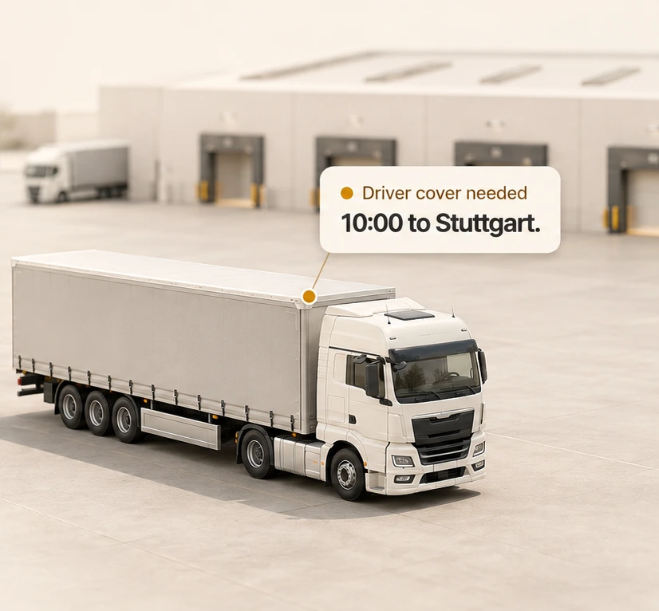
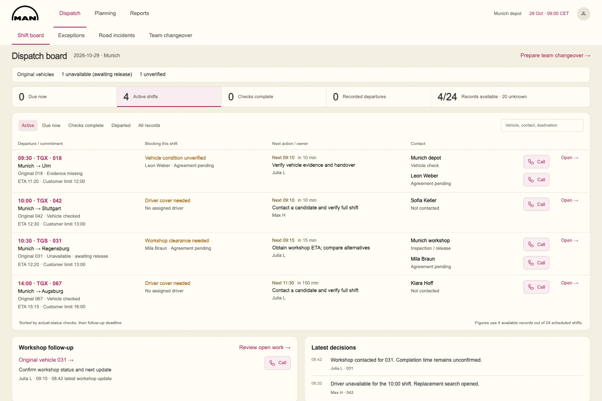
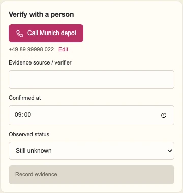
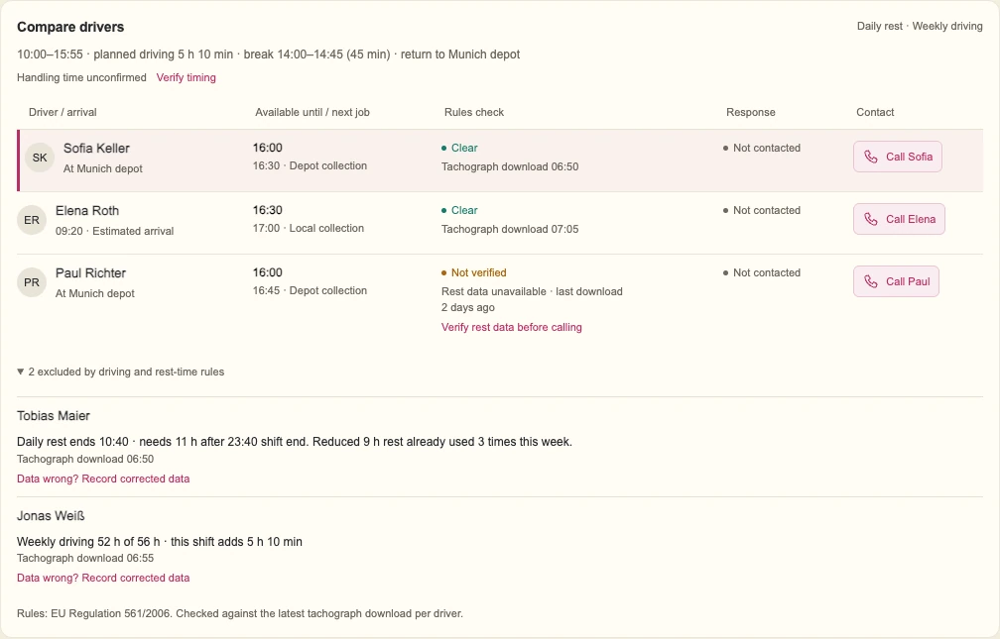
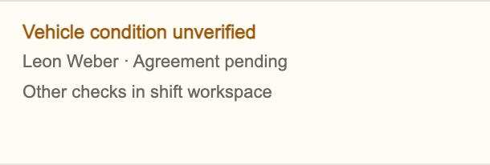
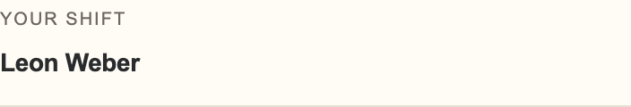
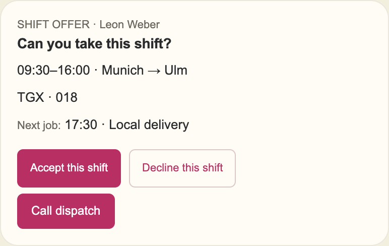

hackathon
What's holding up the next departure?
For the hour before a truck leaves: what's blocking it, and who to call.

A truck can be ready.
Its shift can still be at risk.
Problem
No driver or no handover keeps a healthy truck in the yard.
Workspace
Every departure gets a blocker, an owner and a follow-up time.
Outcome
Hackathon finalist. Not yet tested with dispatchers.
All operational data is fictional.
Munich depot,
09:00.
24 departures. 4 records available. Which one needs a call first?
4/24Shift records

What does dispatch
actually know?
Known
- Depot check 08:35
- Driver hours
- Customer deadline
Still unknown
- 20 shift records
- 018 since 07:10
- 031 release time
Confirmed by a person
- Who checked, and when
- The driver's answer
- Next owner
TGX 042Replacement search openedMax H · 08:20
Follow the 10:00 to Stuttgart.
Where the details matter.
01
Keep the missing records visible.
Four records can't support a fleet-wide percentage.
Fleet uptimeUnavailable4 of 24 records
02
Keep the last signal and the last check separate.
A 07:10 signal is not a check. The depot check records who and when.
Last signal · TGX 01807:10Condition unknown

04
Show why a driver is excluded.
52 h + 5 h 10 min > 56 h weekly limit. The rule is shown; the data can be corrected.

How I checked
the handoffs.
I prototyped in MagicPath and cross-checked the screens with Claude.
- Earlier
- The board said "agreement pending". The app already said "Your shift".


- Revised
- Leon gets an offer first. Accepting unlocks handover.

What I'd test next.
- Can 3–5 dispatchers find the first call to make?
- Time to confirmed cover.
- An on-time baseline before comparing results.